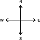
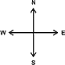

CONTOUR MAP
Objective:
- Draw a geological cross-section along XY.
- Find vertical and true thickness of beds.
Pre-requisites:
Topographic map
Description True Thickness: It is the orthogonal thickness of a structure or bed, measured at right angles to its surface.
Apparent Thickness: The apparent thickness is equal to the true thickness only when the attitude of the unit is horizontal.
Identify the line about which the profiles are to be drawn .


Line to be considered for profiles to be drawn:
Mark all the points of XY line that is obtained by the intersection of the dotted line with this XY of the contour map.
| Points | X-Co | Y-Co |
|---|---|---|
| a | x1 | 1300 |
| b | x2 | 1400 |
| c | x3 | 1500 |
| d | x4 | 1600 |
| e | x5 | 1600 |
| f | x6 | 1500 |
| g | x7 | 1400 |
| h | x8 | 1300 |
| i | x9 | 1300 |
| j | x10 | 1400 |
| k | x11 | 1500 |
Identify X-axis and Y-axis taking X as origin and define scale.Mark X' at a height of 1000 as the new X-axis.
Plot the points taking its distance from X as x coordinate and the index values of the corresponding line as y coordinate along with the points Y’ (1535,0) on the graph.
| Points | X-Co | Y-Co |
|---|---|---|
| a | 30 | 1300 |
| b | 140 | 1400 |
| c | 290 | 1500 |
| d | 450 | 1600 |
| e | 550 | 1600 |
| f | 690 | 1500 |
| g | 840 | 1400 |
| h | 960 | 1300 |
| i | 1050 | 1300 |
| j | 1190 | 1400 |
| k | 1380 | 1500 |
Mark all the points of XY line that is obtained by the intersection of the solid line with this XY of the contour map.
| Points | X-Co | Y-Co |
|---|---|---|
| p | x1 | y1 |
| q | x2 | y2 |
| r | x3 | y3 |
| s | x4 | y4 |
| t | x5 | y5 |
| u | x6 | y6 |
| v | x7 | y7 |
| w | x8 | y8 |
| x | x9 | y9 |
Name the points as p,q,r … respectively taking its distance from X as x-coordinate.
| Points | X-Co | Y-Co |
|---|---|---|
| p | x1 | y1 |
| q | x2 | y2 |
| r | x3 | y3 |
| s | x4 | y4 |
| t | x5 | y5 |
| u | x6 | y6 |
| v | x7 | y7 |
| w | x8 | y8 |
| x | x9 | y9 |
To Calculate the index value of the solid line. Search for the first dotted line on both the sides of the solid line.
▼ ▼ If Found If Not FoundCalculate the index value of all solid lines.
Hint: Found Hint: Not Found| Points | X-Co | Y-Co |
|---|---|---|
| a | 30 | 1300 |
| b | 140 | 1400 |
| c | 290 | 1500 |
| d | 450 | 1600 |
| e | 550 | 1600 |
| f | 690 | 1500 |
| g | 840 | 1400 |
| h | 960 | 1300 |
| i | 1050 | 1300 |
| j | 1190 | 1400 |
| k | 1380 | 1500 |
| Y'Axis | 1535 | 1600 |
| Table 2 | ||
|---|---|---|
| Points | X-Co | Y-Co |
| p | 50 | y1 |
| q | 190 | y2 |
| r | 360 | y3 |
| s | 650 | y4 |
| t | 810 | y5 |
| u | 940 | y6 |
| v | 1095 | y7 |
| w | 1250 | y8 |
| x | 1410 | y9 |
➤For the solid line p:
Plot the above points (p to x) with the plotted points (a to k) along with the points Y’ (1535,0) on the graph.
| Points | X-Co | Y-Co |
|---|---|---|
| p | 50 | 1318 |
| q | 190 | 1433 |
| r | 360 | 1544 |
| s | 650 | 1529 |
| t | 810 | 1420 |
| u | 940 | 1317 |
| v | 1095 | 1332 |
| w | 1250 | 1432 |
| x | 1410 | 1519 |
Join all the plotted points on the graph. And extrapolate it between the bounds.
Calculation for Angle of dip.
➤Search for the points of intersection between the solid line and the dotted line on the contour map.
From the points (p,q,r,s,t,u,O,M,N) find angle of dip θ.
| Points | θ (°) |
|---|---|
| p | |
| q | |
| r | |
| s | |
| t | |
| u | |
| v | |
| w | |
| x | |
| O | |
| M | |
| N |
From the points (p,q,r,s,t,u,v,w,x,o,m,n) draw a line at an angle θ with horizontal in anticlockwise direction and its point of intersection on x-axis be (p’,q’,r’,s’,t’,u’,v’,w’,x’,o’,m’,n’) respectively.
➤p-p’☚
➤q-q’☚
➤r-r’☚
➤s-s’☚
➤t-t’☚
➤u-u’☚
➤v-v’☚
➤w-w’☚
➤x-x’☚
➤o-o’☚
➤m-m’☚
➤n-n’☚
Location of types of stones on the contour.
➤LimeStone☚
➤Shale☚
➤Redsandstone☚
➤Standstone☚
➤Conglomerite☚
To find true thickness of beds.
RS: Redsandstone, SH: Shale, SA: Sandstone, VT: Vertical Thickness, TT: True Thickness
| Region | VT(m) | TT(m) |
Profile View Graph
**Hover over Scale, Direction, Legend and Points to see description of graph**
 


Both ends of the pipe must be trimmed to ensure parallel faces.
Both ends of the pipe must be trimmed to ensure parallel faces.